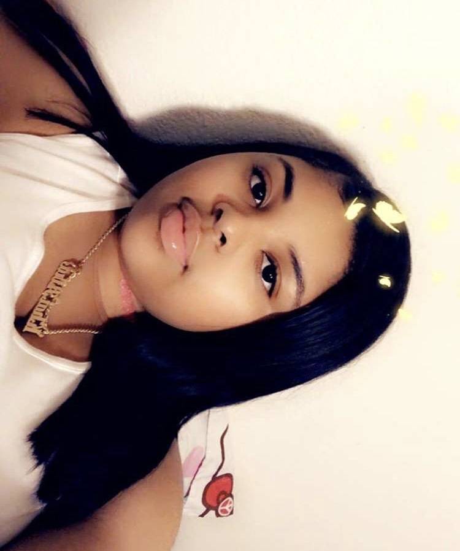

Karina:
Latina Web Designer for this website. I am a student at ICA Cristo Rey
and participate in many extracurriculars such as CLIP, ambassadors, latinas Unidas
club, and a member of Krazy competitive dance team.

Khai’Aira:
I am a incoming Junior at Kipp Sf College Preparatory.
I am just now starting to get into the whole computer science thing and
so far it has been fun but challenging at times. For this project I researched
scholarships for HIspanics and African Americans.

Angeles:
Latina and incoming Junior at San Leandro High School.
I was the lead researcher for the Scholarship section of this website.
I play the right hitter for my high school volleyball team.
 Aubri:
I am a senior at Jesse Bethel High School located in Vallejo, CA where I
participate in varsity basketball and softball. I am also a member of my school’s
black student union and photography club. I am the teen president of the greater
vallejo chapter of jack and jill of america. I am also a member of the CrossTalk Mi
nistry at Friendship Missionary Baptist and a four year member of AVID.
I was the lead research for the Women in CS section.
Aubri:
I am a senior at Jesse Bethel High School located in Vallejo, CA where I
participate in varsity basketball and softball. I am also a member of my school’s
black student union and photography club. I am the teen president of the greater
vallejo chapter of jack and jill of america. I am also a member of the CrossTalk Mi
nistry at Friendship Missionary Baptist and a four year member of AVID.
I was the lead research for the Women in CS section.